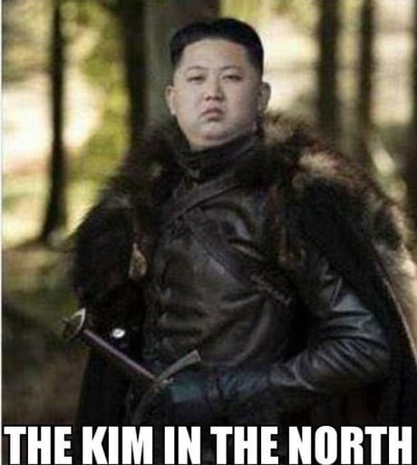

추운 북쪽 영토를 지배하는가? - O
냉혈하고 독단적인가 - O
흑발인가 - O
무력이강한가 -> 손짓한번으로 사람을 눈앞에서 사라지게할수있음 - O
가난하지만 어려운 살림에도 최대한 군사력을 갖추고 있는가 - O
남쪽 수도의 화려한 사교계로부터 무시당하면서도 묵묵히 제 할일을 하는가 - O
직위를 대대로 세습하는가 - O
백마탄 왕자님인가 - O
북쪽의 야만인들과 국경을 맞대고있는가 - O
북부돼공

추운 북쪽 영토를 지배하는가? - O
냉혈하고 독단적인가 - O
흑발인가 - O
무력이강한가 -> 손짓한번으로 사람을 눈앞에서 사라지게할수있음 - O
가난하지만 어려운 살림에도 최대한 군사력을 갖추고 있는가 - O
남쪽 수도의 화려한 사교계로부터 무시당하면서도 묵묵히 제 할일을 하는가 - O
직위를 대대로 세습하는가 - O
백마탄 왕자님인가 - O
북쪽의 야만인들과 국경을 맞대고있는가 - O
북부돼공
잘생겼는가? - X
북한에서는 보기만해도 가랭이가 젖을껄? 남자도포함
공은 친구라던데 발로 차고 싶어
솔직히 김정은정도면 마운자로 안맞은 사람중에선
제일 성공한 사람이다 ㅇㅇ
애딸린 유부남이짆아
돼지잖아
엌ㅋㅋㅋㅋㅋㅋㅋ
김정은 마운자로 최고용량 맞고 웨이트 겁나해서
우락부락 헬창 되면 북한 주민들 사이에서 좀 권위나
이런거 사라지나 ?
한량히키로 유명한 평양 유일의 스팀계정 사용자로 추정되는 김정은 친형은 근육질 되고싶어서 스테로이드도
젊은 시절 맞았다그 여유증 부작용 와서
그만뒀다하던데
돼공 ㄷㄷ
북부돼공ㄷㄷ
돼공 ㅅㅂㅋㅋㅋㅋㅋㅋ
심지어 북한에선 나름 먹히는 몸매
그냥보다가 돼공에 터졌네 ㅋㅋㅋㅋ
안잘생김
이게 히틀러가 아니네
복부비만